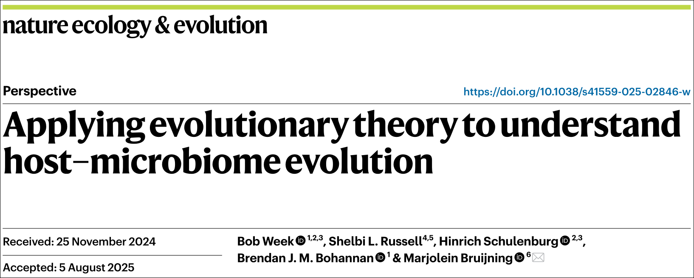
Rescue:
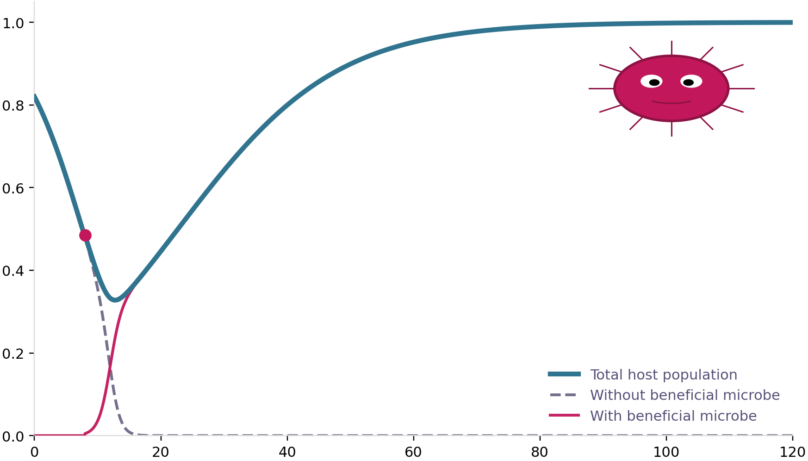
MLS:
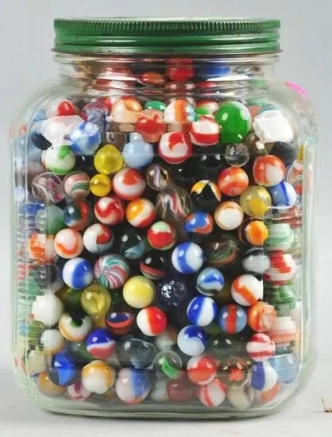
What are genetic correlations?
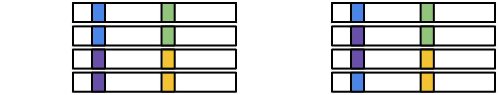
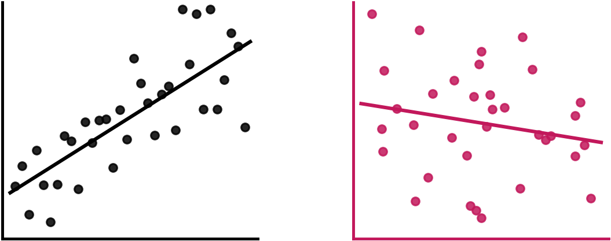
Why do genetic correlations matter?
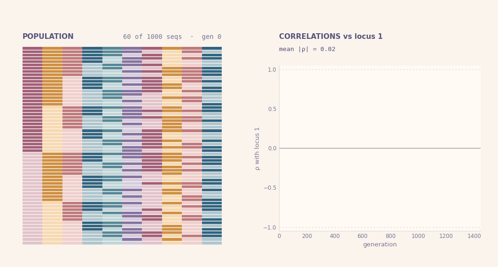
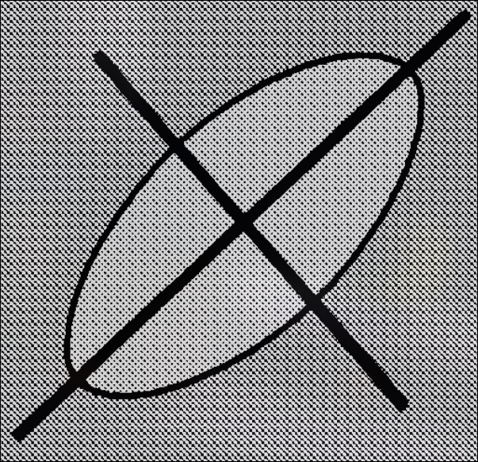
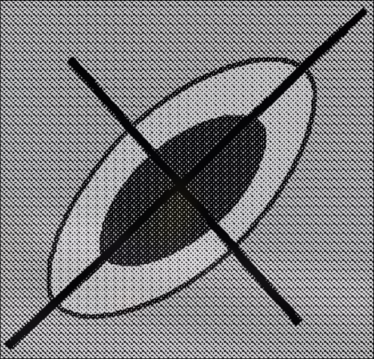
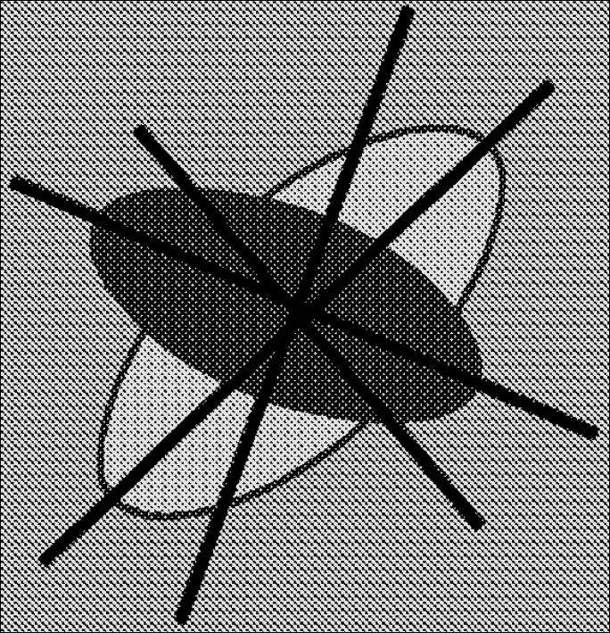
\[\frac{d{\bf G}}{dt}={\color{#c2185b} -\frac{v}{N_e}{\bf G}} + {\color{#5a4cc7}\sqrt{\frac{v}{N_e}}\sqrt{{\bf \Gamma}}:\frac{d{\bf B}}{dt}}\]
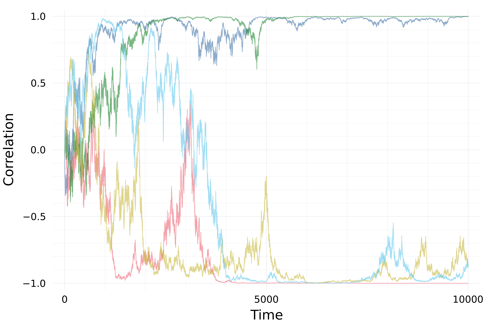
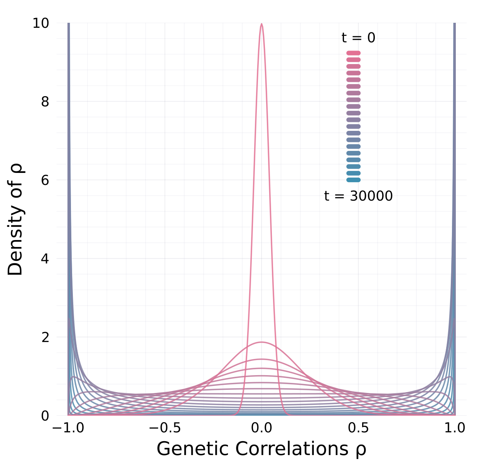
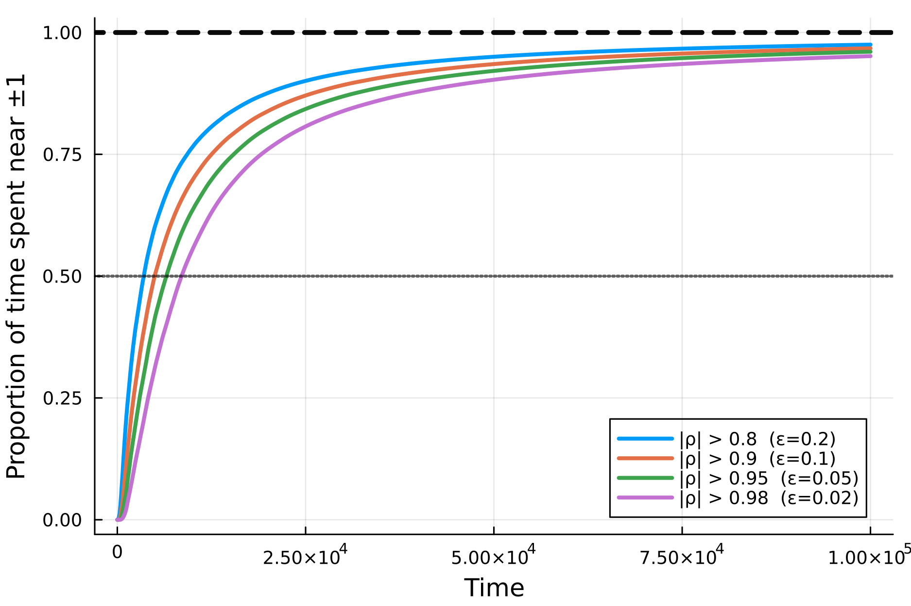
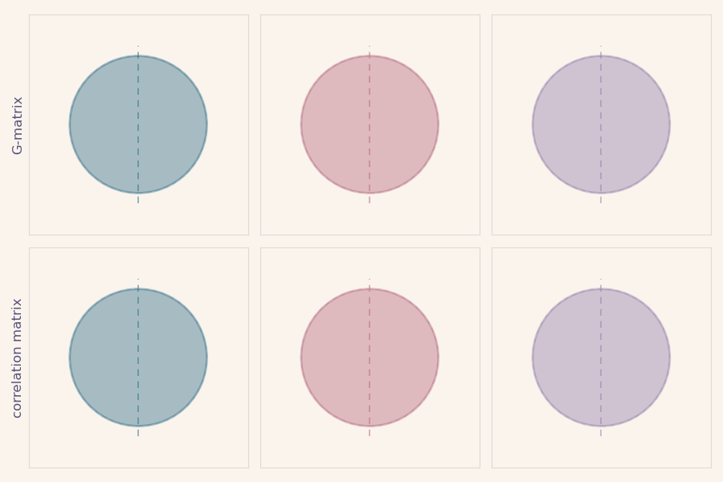